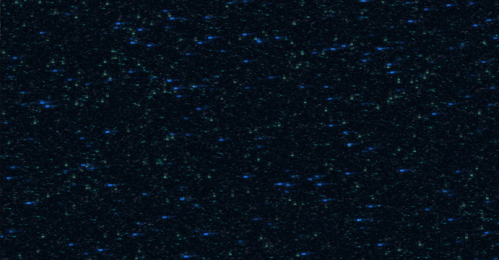
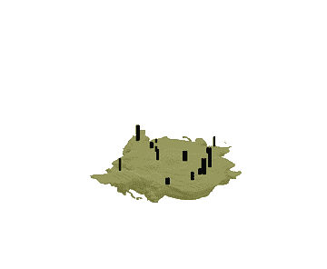

Torna al menù
Documentazione
Per la realizzazione di questo sito, abbiamo preso ispirazione dal noto gioco sandbox di avventura Minecraft.
Nel menu' principale troverete tre bottoni: Spiegazioni, Subnetting calculator, Quiz.
Cliccando su Spiegazioni troverai un tutorial completo sul subnetting(con tanto di esempio)
Cliccando su Subnetting calculator troverai un calcolatore superavanzato di subnetting
Cliccando su Quiz troverai un simpatico quiz sulle reti e sul subnetting
